GETTING STARTED
Paula's Revenge is an 8-track sample tracker for jungle, drum & bass and anything else that wants the crunchy sound of the Amiga's Paula chip and the old Akai samplers. You write music as lines of notes and commands that play from top to bottom, one block at a time, in the order the song lists them.
Install
- Open Releases on the right of the GitHub repo page. Each release has both versions:
PaulasRevenge-macOS.zipfor a Mac andPaulasRevenge-Windows.zipfor a PC (Windows 10 or 11, 64-bit). - Mac: follow
INSTALL.txtinside: copy the app into Applications and clear the macOS quarantine.
PC: unzip it anywhere and runPaula's Revenge.exe. The first time, Windows says Windows protected your PC because the app isn't code-signed yet: click More info, then Run anyway. - Open it. Audio and MIDI devices are under Audio/MIDI Settings… (Cmd,) in the File menu (on a Mac also in the app menu). The File menu has New, Load…, Save, Save As…, Save MOD…, Render WAV… and Export Samples…; the View menu has Capture, Sample Audio, Record Note-Offs, Full Velocity, Follow Instrument and full screen.
- The sound follows the computer's output: plug in headphones or connect AirPods and it moves there, with the status line saying where it went. Follow System Output (Headphones) in the menu turns this off; picking a device by hand in Audio/MIDI Settings turns it off too, so your choice stays.
Your first sound in a minute
- A new song already has a few chip sounds in it, so the keys make sound straight away.
- Press Esc to switch ● EDIT on. The cursor line turns grey. (Space plays and switches EDIT on, to record as it plays; Space again stops and switches it off.)
- Type notes with the bottom two rows of the keyboard (Z is C, S is C#, X is D…). Each note goes in with the current instrument and the cursor moves down by STEP.
- Click LOAD in the instrument panel to pick a break from your drive. Every sample you highlight plays straight away.
- Press Return to hear the block (and Return again to stop). ShiftReturn plays the whole song.
C-3 on line 0 and use 9xx offsets to jump around inside it, or slice it in the sample editor and play the slices from the keys.THE SCREEN
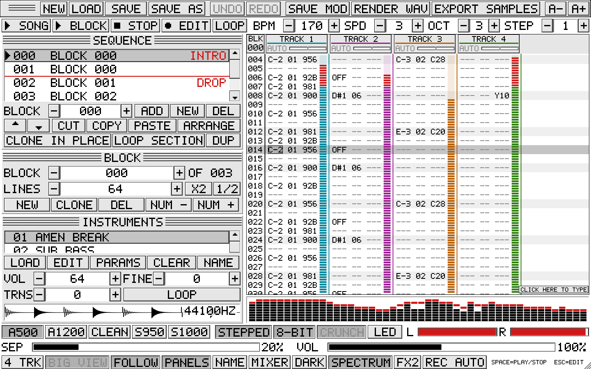
| AREA | WHAT IT DOES |
|---|---|
| Title bar | NEW LOAD SAVE SAVE AS, UNDO REDO, FULL VEL NOTE-OFFS CAPTURE (see Recording), and text size A- A+. Save MOD, Render WAV and Export Samples are in the File menu. |
| Transport | Play the song or the block, stop, EDIT mode, LOOP (the marked lines), BPM, SPD (ticks per line), octave and step, FOLLOW (CmdF) and MIXER (Cmd2). |
| Sequence | The song order. Click a position to go there, drag to highlight positions, and set which block plays where. |
| Block | Pick, add, clone or delete blocks; set the number of lines (1–256); X2 doubles a block, 1/2 halves it. |
| Instruments | 63 slots. LOAD, EDIT, PARAMS, the instrument's VOL, finetune, transpose, loop, and a little waveform. |
| Pattern | 8 tracks. Click a track name to mute it, right-click to solo; drag in the bar under the name to pan the track. |
| Output strip | The machine you hear (A500, A1200, A4000, CLEAN, S950, S1000), its options, the master VOL and an L/R meter. Stereo separation (SEP): right-click a machine button. |
| Bottom row | BIG VIEW, PANELS, DARK, SPECTRUM, FX2, REC AUTO, and the status line. |
The app opens with the dark skin. DARK switches to black on white, as in this manual. Every song has 8 tracks (a 4-channel MOD fills tracks 1–4). BIG VIEW shows 4 at a time with large text, with a tall TRACKS 5-8 ▶ tab beside them; click it for tracks 5–8, and ◀ TRACKS 1-4 brings you back (Tab past track 4 flips too). The song's name (in the window's title bar, and at the top when there's room) is its file's name: save it as amen roller.prv and it's AMEN ROLLER.
The status line at the bottom right says what just happened, and what the command under the cursor does.
Right-click menus
Right-click almost anything for the things you can do to it. Everything they do can be undone.
| RIGHT-CLICK | MENU |
|---|---|
| A note in the pattern | Copy / cut / paste the track, clear the line, insert or delete a line, effect commands, VU meter colour, spectrum colour |
| An effect cell | The command list; on a #xy, the chord list |
| A highlight in the pattern | Bounce it to a new sample |
| An instrument | Copy, paste, duplicate to the next free slot, clear, rename, load a sample, sample (record audio), play C-3 |
| A song position (sequence or ARRANGE) | Copy, cut, paste, repeat, delete, insert the block again, section label |
| The block panel | Copy / cut / paste / clear the block, duplicate, new, delete, double, halve |
| The sample's waveform | The sample editor's edits on the highlight |
| A mixer strip's name | Copy / paste / reset the strip, open the channel |
| A mixer effect slot | Copy / paste the effect, clear the slot, bypass, open |
| A CHORDS slot | Copy, paste, clear (all the picked slots), colour, play, record chords, note |
| Any level meter: the bar at the right of each track, the L / R meter, the mixer's meters | Their colour, one for all of them: green, amber, cyan, red, blue, pink, cream / black, or each track's colour (kept for next time) |
| The spectrum strip | Its colour: the same choices, or rainbow (the track colours, as it starts) |
| EDIT | Recording: note-offs in step entry, detect chords, capture, NOTE-OFFS, FULL VEL, FOLLOW INSTRUMENT |
| A HELP page | Copy the chapter, or all of HELP |
HELP and searching it
HELP has this manual's text. Just type to search it: every match is highlighted and the chapter list shows only the chapters with matches. Enter (or CmdG) goes to the next match, ShiftEnter the one before. Esc clears the search, then closes HELP.
In the dark skin, the plug-in pages (an effect opened from the mixer, a plug-in instrument's page) and the parameter pages are dark too.
WRITING PATTERNS
Each track has a note, an instrument number and an effect command per line: C-2 01 956 means note C-2, instrument 01, command 9 with value 56. A second effect column appears when you switch FX2 on.
Notes and the cursor
- With ● EDIT on, the bottom rows of keys play and enter notes from the octave in OCT; the Q row is the octave above. 1 enters a note-off (
OFF). - In the instrument and command columns, type hex digits 0–9 A–F, or a letter G–Z for the extra commands.
- Shift3 in a command column types
#, the chord command (see Chords). - Delete clears the field under the cursor. ShiftDelete removes the line and pulls the track up; AltDelete inserts a blank line.
- A MIDI keyboard plays the current instrument and enters notes when EDIT is on. MIDI 60 =
C-3.
Recording and note-offs
With EDIT on (Esc or \), playing while the song or block plays records the notes where you play them. On a plug-in or MIDI-out instrument, letting go of a key writes an OFF on the line you let go, so the notes are as long as you held them. When stopped (step entry), note-offs go in only if you ask: right-click EDIT and turn on STEP ENTRY NOTE-OFFS.
- Legato: let go of a key as (or just after) the next one goes down and no
OFFis written — the next note ends the old one by itself. The OFF never lands on the next note, and the next note isn't pushed onto another track. CAPTURE does the same. - NOTE-OFFS in the title bar (also right-click EDIT, and Record Note-Offs in the View menu) switches note-off recording off altogether: live, step entry and CAPTURE then write notes only.
- FULL VEL in the title bar (also right-click EDIT, and Full Velocity in the View menu) ignores how hard you hit a MIDI keyboard: every note plays and records at full velocity (127).
- FOLLOW INSTRUMENT (on to start with; right-click EDIT, or the View menu): clicking a note in the pattern — its note, instrument or effect columns — picks its instrument in the INSTRUMENTS list. A cell without an instrument number uses the last one above it on that track; an empty cell changes nothing.
These switches are remembered.
FOLLOW and the arrows
With FOLLOW on, the cursor moves with playback but the view doesn't scroll by itself: the play line runs down the screen and can go off the bottom. Scroll with the wheel or the arrows at the right of the pattern: ▲ / ▼ move a page (hold to keep going), ● jumps to the play line. A new block starts at its top. When stopped, the arrows move the cursor a page.
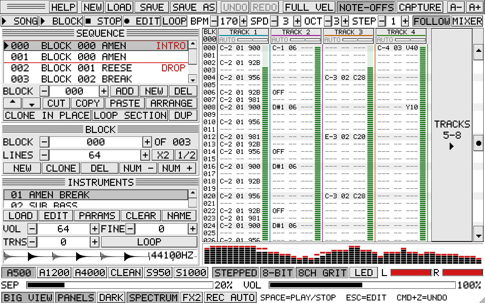
CAPTURE: keep what you just played
The app is always listening to the MIDI keyboard and the laptop keys, even with EDIT off — the last two minutes. Noodle away; if you like what you played, press CAPTURE in the title bar or CmdR (or Capture What I Played in the View menu, or right-click EDIT) and it is written into the pattern, one undo step.
- Played while the song or block was playing: the notes go where they were played, on the nearest line, with an
Mxxfor notes more than a third of a tick early or late. - One take is one time round. Each time playback goes back to the start (the end of the song, a looping block, the loop lines) a new take begins, so loops never pile up. CAPTURE takes the latest time round that had notes in it: play on the 2nd time round, let it go round 5 more times, and it still writes the 2nd. A note held over the wrap gets its
OFFwhere you let go, early in the block, so it rings over the loop as played. - Played while stopped: the notes since the last pause of more than 4 seconds go in from the cursor, at the song's tempo.
- Notes start on the cursor's track; held notes spread over the tracks to the right. Chords that match the chord table go in as one note +
#xy(see Playing chords in). Plug-in and MIDI-out instruments get note-offs (not between legato notes, and none with NOTE-OFFS off).
Highlighting with the mouse
Drag across the pattern to highlight notes and effects; it snaps to whole fields and can cover several tracks. Shift-click highlights from the cursor to the click, and CmdA highlights the whole block.
- CmdC / CmdX copy or cut the highlight; CmdV pastes at the cursor, each part into the same kind of field. Without a highlight they work on the whole track (add Shift for the block).
- Cmd↑ / Cmd↓ transpose the track a semitone, with Shift an octave.
- Right-click inside a highlight to bounce it to a new sample.
Looping some lines
Drag down the line numbers to mark lines; they turn red and playback goes round them. Cmd[ and Cmd] set the start and end at the cursor. LOOP on the transport row turns the loop off and on again.
Playing a block
While a block plays, picking another block (in the sequence, the BLOCK box or the BLK corner) carries playback over to it on the same line, without stopping, so you can try blocks against each other in time.
Undo
One history covers everything: notes, blocks, the sequence, instruments, samples, the mixer and song settings. CmdZ and CmdShiftZ work on every page, and the status line says what was undone. It keeps the last 200 steps.
EFFECT COMMANDS
Right-click an effect cell for a list of every command with what it does. Click one, or type its letter, and it goes into the cell with a useful starting value, the cursor ready on the value. Put the cursor on any command to see it explained in the help strip under the pattern.
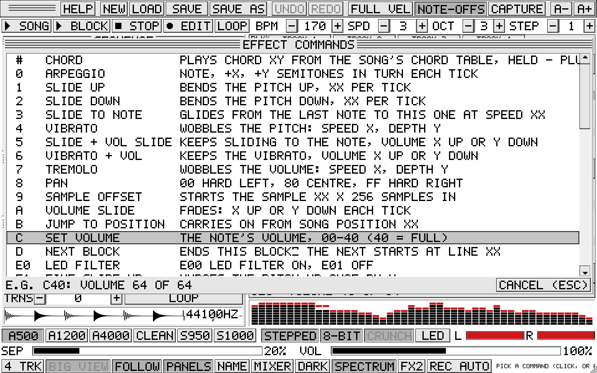
The chord command (#)
#xy plays chord slot xy from the song's chord table, held, on a plug-in or MIDI-out instrument. It is at the top of the command list; clicking it opens the chord list. See Chords.
Classic commands (0–F)
The same numbering as ProTracker, so MOD files load straight in.
| CMD | EFFECT |
|---|---|
0xy | Arpeggio (+x, +y semitones), as in ProTracker |
1xx 2xx | Slide pitch up / down |
3xx | Slide to the note |
4xy | Vibrato (speed x, depth y) |
5xy 6xy | Slide to note / vibrato, plus volume slide |
7xy | Tremolo |
8xx | Pan: 00 left, 80 centre, FF right |
9xx | Sample offset (xx × 256) |
Axy | Volume slide (x up, y down) |
Bxx | Jump to song position xx |
Cxx | Volume (00–40); velocity on plug-in and MIDI-out instruments |
Dxx | Next block, starting at line xx |
E0x | LED filter: E00 on, E01 off |
E1x E2x | Fine slide up / down |
E4x E7x | Vibrato / tremolo waveform |
E5x | Finetune |
E6x | Loop: E60 marks the start, E6x repeats x times |
E8x | Coarse pan |
E9x | Retrigger every x ticks |
EAx EBx | Fine volume up / down |
ECx | Cut the note at tick x |
EDx | Delay the note by x ticks |
EEx | Delay the line by x lines |
Fxx | 01–1F speed, 20–FF BPM, 00 stop |
Extra commands (G–Z)
Type the letter in an effect column, then two hex digits.
| CMD | EFFECT |
|---|---|
Gxx | Glide to the note over xx ticks |
Hxx Lxx Wxx | High-pass / low-pass / band-pass filter, cutoff xx (00 20 Hz – FF 20 kHz). On a plug-in or MIDI-out instrument, its learned knobs instead. |
Qxx | Filter resonance (or a learned knob) |
Ixx | Transpose just this note: 80 none, 8C +12, 74 −12 |
Kxx | Chance: the step plays xx/FF of the time |
Mxx | Micro-move: 01–7F late by xx/128 of a line, 81–FF early |
Nxx | Note length: release after xx ticks |
Oxx | Overdrive (on plug-in / MIDI-out instruments: the mod wheel) |
Pxx | Start at xx/256 of the sample |
Rxy | Roll: retrigger every x ticks, y 1–7 quieter or 9–F louder each time |
Sxx | Play slice xx+1 |
Txx | Micro-tune: 80 = 0, each step 1 cent |
U01 U00 | Play backwards / forwards |
Xxy | Randomise: x 0 note ±y, 1 volume, 2 pan, 3 start |
Zxx | Bit crush to xx bits |
Vxx Jxx | The track's automation knobs AUTO A and AUTO B (see Automation) |
Yxx | The next knob change on this track glides over xx ticks |
BLOCKS & THE SONG
A song is a list of positions, each playing a block. The same block can play at many positions; change it once and every position hears the change.
The sequence panel
- ADD puts a new position after the selected one, playing the same block; change it with BLOCK - +. NEW makes a new empty block in a new position.
- Drag over the names to highlight positions, then CUT COPY PASTE DUPLICATE DEL. To move them, drag by the position numbers on the left (a hand shows there), or use ▲ ▼.
- COMBINE INTO ONE BLOCK (right-click a highlight): the highlighted blocks, one after another, become one new block in their place (up to 256 lines).
- LOOP SELECTION (or right-click) loops the highlighted positions while the song plays. The list follows the position playing.
- CLONE IN PLACE gives a position its own copy of its block, in the next free block, so you can change it without touching the other places it plays.
- Click the label at the right of a row (or
+ SECTION) to start a named section there (INTRO, DROP…). LOOP SECTION loops the section you're in; pick a position in another section and playback goes there when the current block ends. - Block names: double-click a position (or right-click → BLOCK NAME...) to name its block (AMEN, REESE…). The name takes the place of the word BLOCK —
000 AMEN 003 DROP— with a gap before the block number (which never changes) and before the section name. A name too long for its space scrolls along on the playing, highlighted or pointed-at row. The BLOCK panel's title shows it too.
The arrange page
ARRANGE shows the song order full size, with a picture of each block's notes. It shares the highlight and clipboard with the sequence panel. INSERT adds the BLOCK number after the cursor, SET makes the highlighted positions play it.
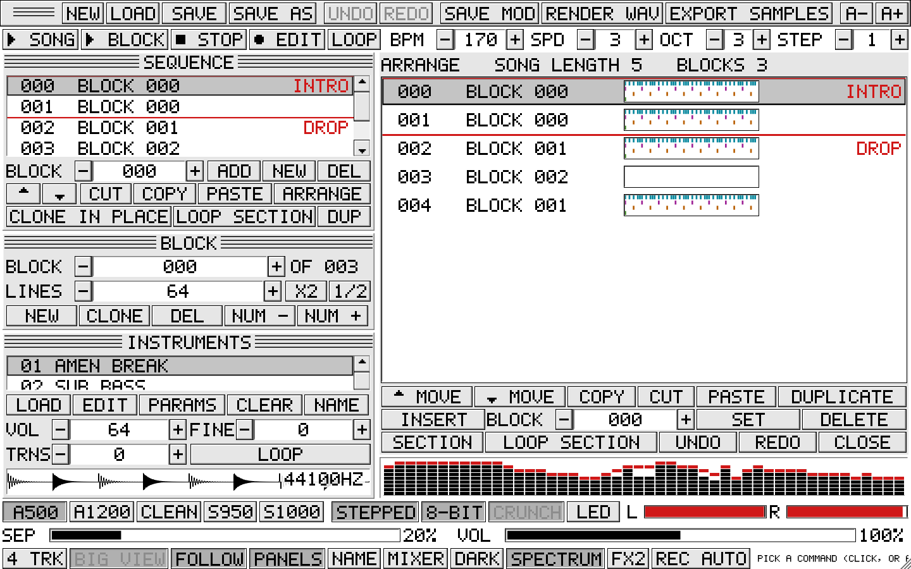
INSTRUMENTS & SAMPLES
The sample browser
LOAD opens the browser in place of the pattern. Every sample you highlight plays straight away, and the note keys or a MIDI keyboard play it at other pitches. Shortcut buttons go to Home, Music, Desktop, Downloads, Documents and Drives, and four FAV buttons hold your own folders (click an empty one to set it; Shift-click changes it, Alt-click clears it). Enter or a double-click loads the sample.
The sample editor
EDIT (or a double-click on the little waveform) opens the editor.
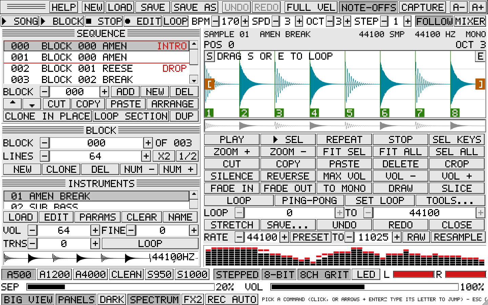
- Drag to select; grab either end of a selection to move just that end. The note keys and MIDI play the sample through the full instrument sound; SEL KEYS plays just the selection.
- CUT COPY PASTE DELETE CROP SILENCE REVERSE MAX VOL VOL - VOL + FADE IN FADE OUT TO MONO, and DRAW to draw the wave.
- TOOLS...: GAIN, NORMALISE, REMOVE DC, TRIM SILENCE, INSERT SILENCE, CROSSFADE LOOP (a smooth jump back), PITCH (semitones, resampled), SWAP LEFT / RIGHT, START / END from the selection, SAVE SAMPLE. SAVE... writes the sample to a WAV wherever you choose.
- START / END: drag the green [ and ] handles at the middle of the wave: only the part between them plays, the rest is shaded but kept. They're separate from the loop (which is cut at END);
9xxcounts from START. - Space stops whatever plays, the song too; when nothing does, it plays the sample.
- Loop: drag the S and E handles at the top of the wave; you hear the loop while you drag. PING-PONG plays it forwards then backwards.
Rates
Each instrument has a RATE: the speed it plays at on C-3. Samples load at their own rate, so they sound as recorded. RATE changes it without touching the data (lower rate, lower and slower); RESAMPLE converts the data to a new rate and keeps the pitch, with RAW for the rough, unfiltered old-sampler way.
Slicing
SLICE opens the slicer. AUTO finds the hits (SENS sets how quiet), EVEN cuts equal slices. Drag a tab to move a slice point, double-click the wave to add one, Alt-click a tab to remove it. With SLICE TO KEYS on, C-3 plays slice 1, C#3 slice 2 and so on; without it, Sxx picks the slice.
Time stretch
STRETCH opens the old-sampler stretch: CLASSIC (the Akai sound, matched to recordings of the real thing), REVISED (cleaner joins), HARD (no blending) and AKAIZER (Akaizer v1.2's granular method, rebuilt). Set TIME %, SEMI and CENTS and the CYCLE length; FIT TO LINES makes the selection last a number of lines at the song's tempo. PREVIEW, then APPLY.
Sampling: recording audio
Record straight into the selected instrument, from an audio interface, the mic or line-in, or from the app's own output. Open the SAMPLE page with Cmd4, Sample Audio… in the View menu, right-click an instrument → SAMPLE (RECORD AUDIO)…, or click an empty instrument's NO SAMPLE - CLICK TO RECORD.
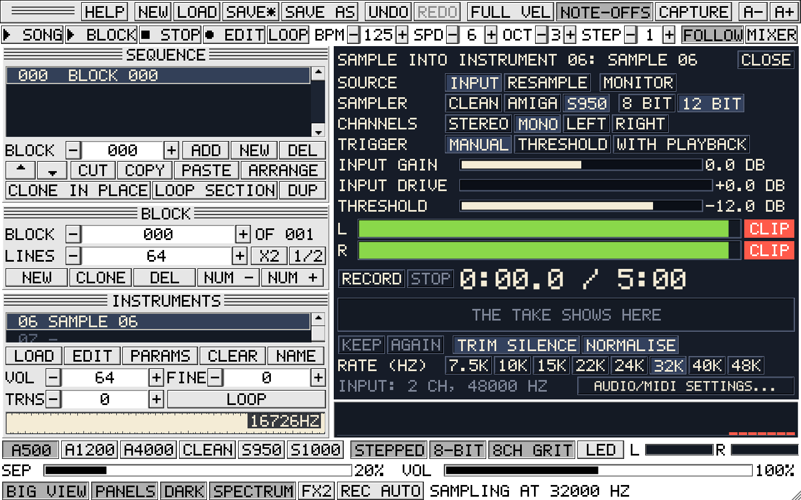
| CONTROL | WHAT IT DOES |
|---|---|
| INPUT RESAMPLE | Record the audio input (chosen in AUDIO/MIDI SETTINGS…, bottom right), or everything the app plays: play the song or a block, or jam, and record what comes out |
| MONITOR | Hear the input through the app. Off to start with: with a mic, use headphones or it feeds back |
| STEREO MONO LEFT RIGHT | What goes into the instrument (MONO mixes left and right) |
| MANUAL | Records from the moment you press RECORD |
| THRESHOLD | RECORD arms it; it starts when the sound goes over the THRESHOLD level (the red line on the meter), keeping the 20 ms before so the attack isn't cut |
| WITH PLAYBACK | RECORD arms it; it records from when the song or block starts to when it stops: one block, exactly |
| INPUT GAIN | −24 to +24 dB. The meter shows the level, a peak hold and a CLIP light |
| RECORD STOP | Start (or arm) and end it (R). Up to 5 minutes. It carries on if you go to another page |
| KEEP AGAIN | The take into the instrument, one undo step (Enter), or thrown away and recorded again (Backspace) |
| TRIM SILENCE NORMALISE | Cut quiet at both ends; bring the loudest point to full level. Both on to start with |
| CLEAN AMIGA S950 | How the sound gets in. CLEAN (the default): the interface as it is. AMIGA: 8-bit at 8363 / 16726 / 22050 / 28867 Hz with no anti-alias filter (the aliasing grit). S950: 12-bit at 7.5K–48K through its filter, which follows the rate. You hear it as you sample, with MONITOR on |
| 8 BIT 12 BIT | The bits, for either sampler (an S950 at 8 bits, an Amiga at 12) |
| INPUT DRIVE | 0 to +24 dB into the sampler's input: the S950 goes soft and fat then hits the ceiling (the CLIP lights), like the classic overloaded records; an Amiga sampler just clips |
| AMIGA RATE | CLEAN only: NONE keeps the recording's rate; 8363, 16726, 22050 or 28867 Hz resamples it as you keep it, at the same pitch |
The first time on a Mac, macOS asks whether Paula's Revenge may use the microphone: say OK, or the input is silent (System Settings → Privacy & Security → Microphone changes it later). After KEEP it's a sample like any other: EDIT to slice or loop it, and it's saved in the song.
Instrument VOL and switching off
VOL is a level for the whole instrument on top of each note's Cxx. Any instrument can be switched off with its ON button (on its PARAMS page): its notes are silent and the list shows it dimmed with OFF.
SOUND SHAPING
PARAMS opens the current instrument's page. Everything starts off or neutral, so MODs and older songs sound exactly as they did.
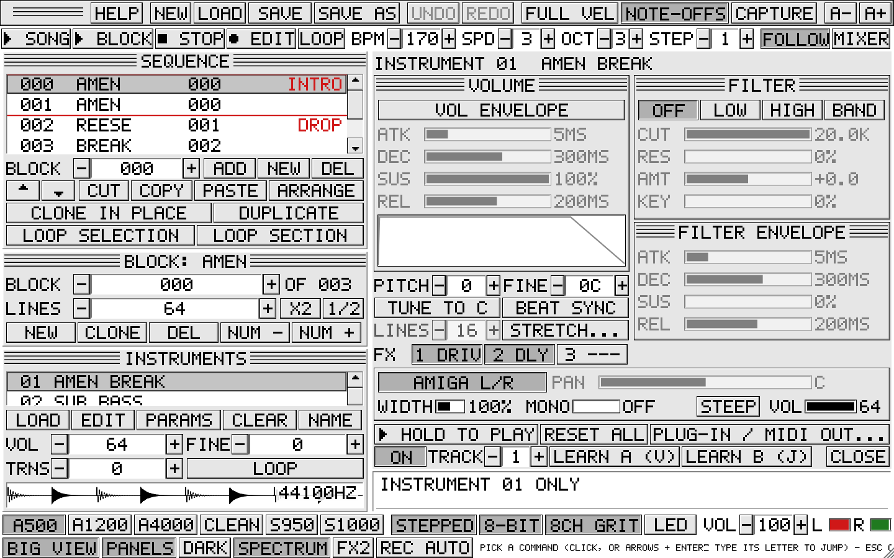
- Volume envelope: VOL ENVELOPE on, then ATK, DEC, SUS, REL (1 ms – 10 s). With it on, a note-off starts the release instead of cutting the note.
- Filter: OFF / LOW / HIGH / BAND, CUT, RES, AMT (how far the filter envelope moves it) and KEY (how far the cutoff follows the note). The filter envelope has its own ATK, DEC, SUS, REL.
- Pan: AMIGA L/R follows the Amiga track layout; switch it off to give the instrument its own PAN.
- UTILITY (the row under PAN, and on a plug-in instrument's page): WIDTH 0% (mono) to 200%; MONO makes everything below a frequency mono (OFF, or
<20HZto<500HZ, a smooth 24 dB/octave crossover, or 48 with STEEP) — mono the bass; VOL is the instrument's VOL itself, so moving either one moves the other. Before the instrument's own effects; not on MIDI out or CV out. At 100% and OFF it does nothing. - Spectrum: while PARAMS (or a plug-in instrument's page) is up, the spectrum strip under it shows just that instrument's sound, marked
INSTRUMENT 01 ONLY. - Tuning: PITCH (±48 semitones) and FINE (±100 cents). TUNE TO C listens to the sample and sets them so
C-3plays a C. - BEAT SYNC (like Renoise): the sample lasts LINES lines at
C-3at any tempo, repitched live to fit. STRETCH... opens the time stretch set to those lines, to fit it at its own pitch instead. - ▶ HOLD TO PLAY or the keys to hear it; RESET ALL puts everything back; double-click any slider for its default.
- ON switches the instrument off and on. To switch it from the pattern, pick a track, press LEARN A (V) or LEARN B (J), then click ON: that track's
V00switches it off andV01–VFFon. - PLUG-IN / MIDI OUT... plays the instrument with a VST3 / AU instrument or with your hardware instead (see Plug-ins and MIDI out).
Instrument effects
Every instrument has three insert slots of its own, like a mixer strip's: the built-in filter, drive, compressor, delay, reverb and chorus, or a VST3 / AU plug-in. They're on the FX row, under the volume envelope in the picture above (and on a plug-in instrument's page).
- Click a slot to open it on the mixer's effect page; BACK returns to the instrument. Right-click for OPEN, BYPASS, COPY, PASTE and CLEAR. A lit slot is on.
- The sound goes through the instrument's effects first, then into the strip of the track it plays on. Every note goes through the one chain, so a delay or reverb carries on across notes; its output goes to the track of the instrument's latest note.
- The effects belong to the instrument: saved in the song, undo steps, and copied with it (COPY / PASTE / DUPLICATE). RENDER WAV and bouncing include them. A plug-in's own delay on an instrument slot isn't compensated.
PAULA & THE AKAIS
The output strip picks the machine you hear. None of these change your samples; switch between them any time.
| CONTROL | WHAT IT DOES |
|---|---|
| A500 | The A500 (and A600, A2000): a 4.42 kHz output filter, warm and dull |
| A1200 | The A1200: much brighter, about −3 dB around 14 kHz, as measured |
| A4000 | The A4000: about 4.6 kHz, as measured |
| CLEAN | Paula with no output filtering |
| S950 | Akai S950: 12-bit, stepped variable-rate playback, its 6-pole filter |
| S1000 | Akai S1000: 16-bit, interpolated playback, clean 44.1 kHz-style output |
| STEPPED | Paula's stepped playback, exactly as the chip makes it (off = smooth) |
| 8-BIT | Samples play at 8-bit resolution |
| 8CH GRIT | OctaMED's 8-channel sound on all 8 tracks. The Amiga has 4 channels, so 8-channel trackers mixed two tracks into each (1+5, 2+6, 3+7, 4+8) at half level and squashed them back to 8 bits; this does the squashing, then brings the level back up. On for the Amiga models. Every track plays at full level either way, and a safety limiter stops eight loud tracks clipping |
| LED | The Amiga's "LED" low-pass filter (12 dB/oct at 3.2 kHz) at the start of the song (E00 / E01 switch it while playing) |
| SEP | Right-click a machine button (or View → Stereo Separation...): how far tracks lean to the Amiga sides (1, 4, 5, 8 left; 2, 3, 6, 7 right). 20% to start; 0% = all centred, 100% = the full Amiga split |
| VOL | The master volume after everything, 0–200% (100 = as it is), beside the meter |
How the Paula modes work
- The staircase, without false notes. Paula holds each sample until the next, so its output is a staircase whose copies of the sound go far above hearing. Played straight, those copies fold back as out-of-tune tones. With STEPPED on, every change of level is a band-limited step instead: everything a real Paula puts out below 20 kHz is there, its own staircase images included, and nothing folds back. It sounds the same at 44.1, 48 or 96 kHz.
- Volume below 64. At 64 a real Paula changes level exactly when the next sample is due; below 64 it works on a fixed 55.4 kHz grid, so each change waits for the next grid point. That adds a faint grit to everything not at full volume. A500, A1200 and A4000 do this; CLEAN doesn't.
- The filters are the real ones: the A500's 4.42 kHz RC filter (100 nF, 360 Ω), the A1200's and A4000's measured responses, the LED filter as a Butterworth. (From Henryk Richter's Amiga Paula vs. System Theory; the band-limited steps follow OpenMPT and Antti S. Lankila.)
Panning, in order
8xxin the pattern (an absolute position, not scaled by SEP).- The track's pan, the bar under its name (AUTO = none).
- The instrument's PAN, when its AMIGA L/R is off.
- Otherwise Amiga style, by SEP. Stereo samples play centred with their own stereo image.
THE MIXER
MIXER on the transport row (Cmd2) opens the mixer across the window; Esc or Cmd1 goes back. The keys still play the current instrument while it's open.
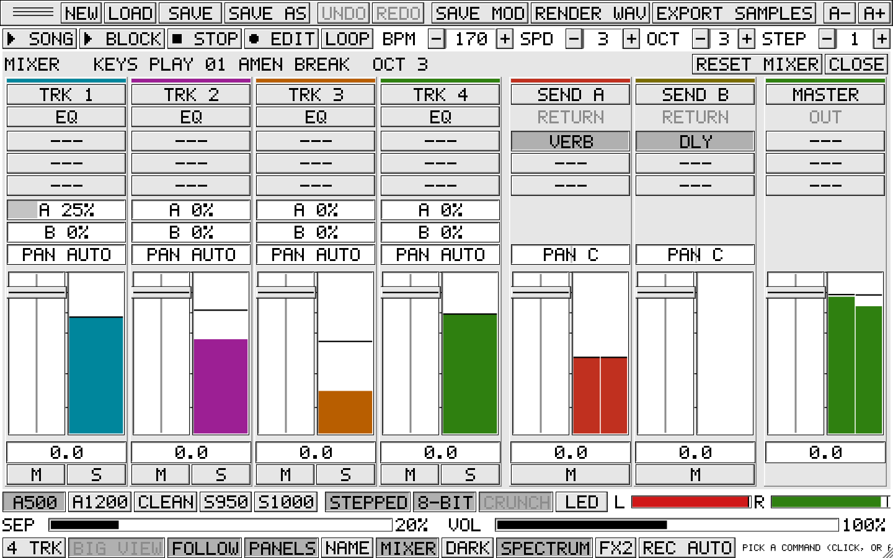
| STRIP PART | WHAT IT DOES |
|---|---|
| Name / EQ | Opens the track's channel page. EQ is lit when a band is on; EQ AB when automation knobs are set. |
| 3 insert slots | Click for the effect page; Shift-click bypasses (a bypassed slot is dimmed). |
| A, B | How much goes to SEND A / B. AP / BP = pre-fader. Double-click = off. |
| PAN | The track's pan. Double-click = AUTO. |
| Fader | −INF to +6 dB with the meter beside it. Shift = fine, double-click = 0 dB. |
| M / S | Mute and solo. |
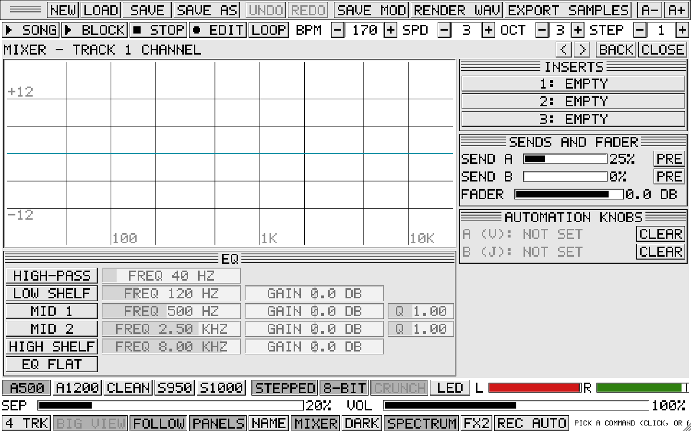
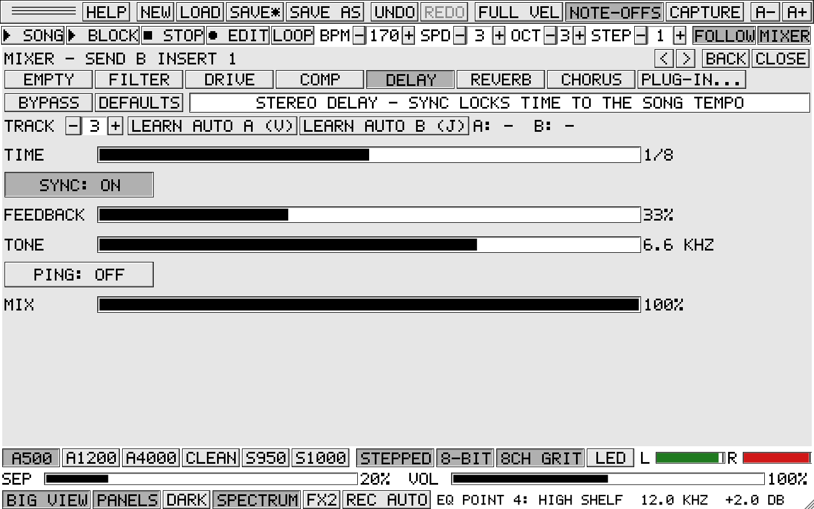
- Channel page — the EQ: up to 8 points on the curve, over the track's live spectrum, smoothed with a faint peak-hold line (SPECTRUM switches it off; it stays put when you stop). Right-click SPECTRUM or an empty part of the graph for its colour: ICE, CYAN, GREEN, LIME, AMBER, ORANGE, MAGENTA or VIOLET. < > step through the tracks.
- Double-click the graph to add a point there: a LOW SHELF below 80 Hz, a HIGH SHELF above 10 kHz, a BELL in between.
- Drag a point: across is frequency, up and down is gain, with a big readout as you go. The wheel sets a bell's Q.
- Right-click a point for its type (BELL, LOW / HIGH SHELF, HIGH- / LOW-PASS), SWITCH OFF, RESET GAIN and REMOVE POINT; Delete removes the selected one.
- Under the graph: the selected point's type, ON, REMOVE POINT, FREQ, GAIN and Q. EQ FLAT removes them all. Songs from before v0.25 keep their bands that were on.
- Effect page: FILTER, DRIVE, COMP, DELAY (in ms or synced to the song), REVERB, CHORUS, or PLUG-IN.... Every page has BYPASS and DEFAULTS.
- Returns: SEND A starts with a reverb and SEND B with a delay, fully wet, silent until a track sends to them.
- Delay compensation: plug-ins that give their sound back late (lookahead limiters, linear-phase EQs) are lined up, so every track stays in time, sends included. The strips page title shows the total delay.
A mixer with nothing changed is skipped, so the song sounds exactly as it would without one. Everything in it is saved in the song, undoable and in renders.
PLUG-INS
Effects in the mixer
On any insert slot's effect page press PLUG-IN.... The first time, it looks for the plug-ins on your Mac, each one in a separate hidden copy of the app, so one that crashes can't take Paula's Revenge down. Double-click one to load it; OPEN PLUG-IN WINDOW shows its own controls. To find one, just type: the list narrows to every word in the name, maker or format (VALHALLA, U-HE ZEB); Esc clears it. Favourites: right-click a plug-in (or FAVOURITE) to star it — stars come first, and FAVOURITES ONLY shows just them. The instrument list works the same way. Its settings are saved in the song. If a song uses a plug-in this Mac doesn't have, the slot shows !NAME, passes the audio through and keeps the settings.
Instruments
Pick an instrument, press PARAMS, then PLUG-IN / MIDI OUT... and A VST3 / AU INSTRUMENT.
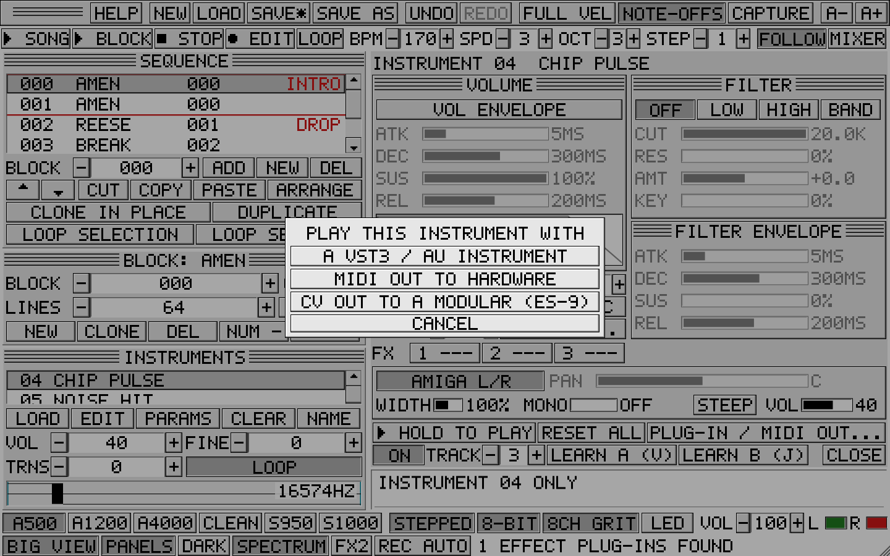
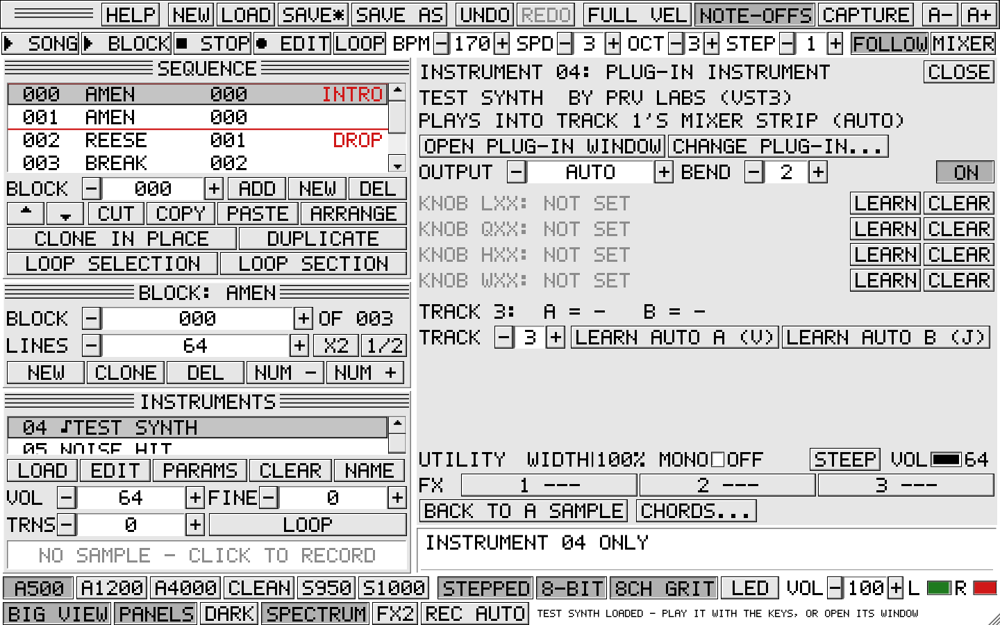
- EDIT opens the plug-in's own window. The laptop keys keep playing it while that window is in front.
- OUTPUT picks the mixer strip it plays into; AUTO is the track that played its latest note (the same in the song, a render and a bounce). BEND should match the plug-in's own pitch bend range, so slides and vibrato land in tune.
- Notes play one at a time per track.
Cxxis velocity, pitch commands become pitch bend,Oxxis the mod wheel, andECxEDxNxxKxxMxxE9xRxywork. Sample-only commands are ignored. - Chords:
#xyon a note's line plays chord slotxyfrom the song's chord table, held. See Chords. - Letting go of a key while recording writes a note-off (see Recording and note-offs).
- LEARN next to
LQHW, then move a knob in the plug-in's window: those commands then move that knob on this instrument's notes.
AUTOMATION
Every track has two automation knobs, AUTO A (Vxx) and AUTO B (Jxx). Point one at any effect control and the pattern moves it.
- Open an insert's effect page in the mixer. Pick the track in the TRACK box.
- Press LEARN AUTO A (V), then move the control: drag a built-in effect's slider, or turn a knob in the plug-in's window.
- In the pattern,
V00is the control's lowest andVFFits highest. The value holds until the next one. - Put
Yxxbefore or beside theVto glide there over xx ticks instead of jumping.
- On and off: press LEARN, then click the effect's BYPASS (or an instrument's ON) instead.
V00then switches it off andV01–VFFon. - The channel page lists what each knob controls under AUTOMATION KNOBS, with CLEAR buttons. The help strip and the command list name it too.
Recording by hand: REC AUTO
Switch on REC AUTO on the bottom row, turn EDIT on and play. Moving a learned control writes its command on the line that's playing: V or J, or L Q H W for an instrument's own knobs on the track playing it.
- It goes in the first effect column if that's free, otherwise in FX2. It never overwrites other commands; that line is skipped and the status line says so.
- One value per line per knob, and only when it changes. What the pattern plays back isn't recorded again.
- A whole pass, until you stop, is one undo step.
MIDI OUT
An instrument can play your hardware (an MPC, a microKORG, an NTS-1) over MIDI. Press PARAMS, PLUG-IN / MIDI OUT..., MIDI OUT TO HARDWARE, then double-click a MIDI output. (For a modular, see CV out.)
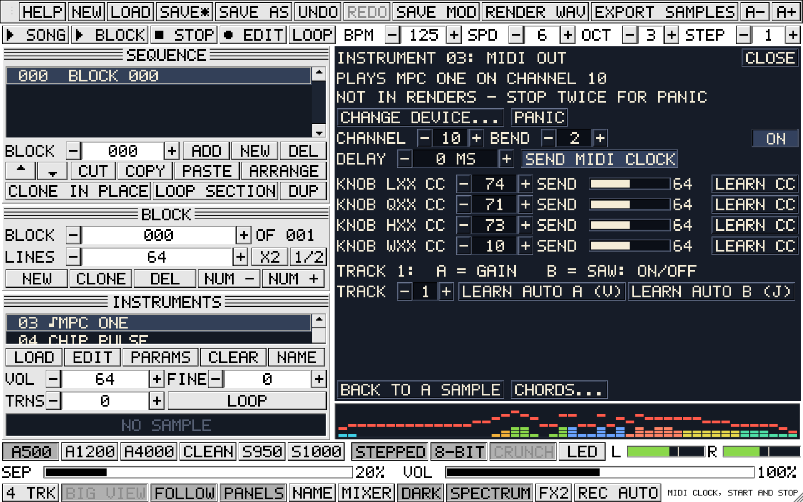
| CONTROL | WHAT IT DOES |
|---|---|
| CHANNEL | MIDI channel 1–16 |
| BEND | The hardware's pitch bend range, so pitch commands land in tune |
| ON | As for plug-in instruments; #xy plays chords here too |
| DELAY | −50 to +200 ms to line the hardware up with the audio. Positive: the MIDI goes later. Negative: all the audio goes later instead. |
| SEND MIDI CLOCK | 24-a-beat clock with start, stop, continue and song position (4 lines = a beat), so the hardware follows the song |
| KNOB L Q H W | The CC each sends (74, 71, 73, 10 to start). LEARN CC takes the number from the next knob you turn on a controller; the SEND bar sends it now (and REC AUTO records it). |
| PANIC | All notes off on every MIDI output. STOP pressed while already stopped does the same. |
Notes, velocity, pitch bend, the mod wheel and the timing commands work as for plug-in instruments. If the device isn't connected, the instrument shows !NAME, sends nothing and keeps its settings; CHANGE DEVICE... and the same device again reconnects it. MIDI-out instruments aren't in renders or bounces (they're hardware).
CV OUT TO A MODULAR
With a DC-coupled interface (an Expert Sleepers ES-9, or anything that can put out steady voltages) Paula's Revenge plays and clocks a Eurorack modular. Ordinary interfaces block DC, so CV won't work through them.
- Choose the interface in Audio/MIDI Settings…. With more than 2 outputs the app switches them all on (up to 16), in order: output 5 in the app is the interface's output 5. Outputs 1–2 are the music; CV goes on 3–16.
- Press PARAMS, PLUG-IN / MIDI OUT..., CV OUT TO A MODULAR (ES-9).
- Patch the PITCH and GATE outputs to an oscillator and an envelope, and play.
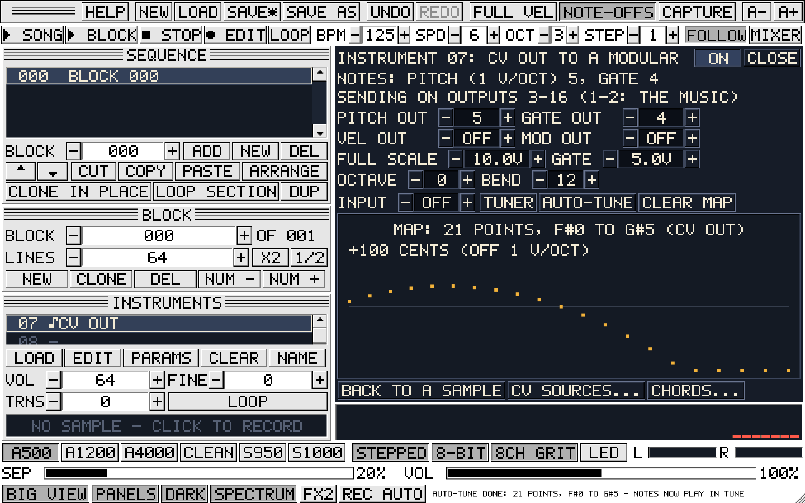
| CONTROL | WHAT IT DOES |
|---|---|
| PITCH OUT | 1 V / octave, C-3 = 0 V |
| GATE OUT | High while a note plays, at the GATE level |
| VEL OUT | The note's velocity (or Cxx) as 0 V to the gate level |
| MOD OUT | The Lxx knob as a voltage |
| FULL SCALE | The volts the interface puts out at full level: 10 V for the ES-9 |
| OCTAVE BEND | Shift the pitch by octaves; the range pitch commands bend over |
| INPUT TUNER | INPUT is where the oscillator comes back in. TUNER holds C-3's voltage with the gate open and shows the pitch it hears: tune the oscillator to a C |
| AUTO-TUNE | Steps the pitch CV from −2.5 to +2.5 V, measures each step (about 10 seconds; leave the oscillator alone) and makes a map: every note is then sent at the voltage that plays it in tune, even on an oscillator that isn't exactly 1 V / octave. The map is saved with the instrument, and kept on this computer under the instrument's name (name it after the synth first); MAP... loads one of those, or CLEAR MAP goes back to plain 1 V / octave |
It's mono: the newest note wins, a released key goes back to one still held, and a new note while the gate is open closes it for 2 ms so envelopes start again. OFF closes the gate; slides, vibrato and pitch bends move the pitch CV. It plays in step with the song, sample by sample. RENDER WAV writes the voltages too: one 32-bit float WAV per output used (song CV OUT 3.wav…), the same length as the audio. It isn't in bounces.
CV sources
CV SOURCES... (on the CV OUT page) gives the song up to 8 voltages of its own, each on an output, saved in the song.
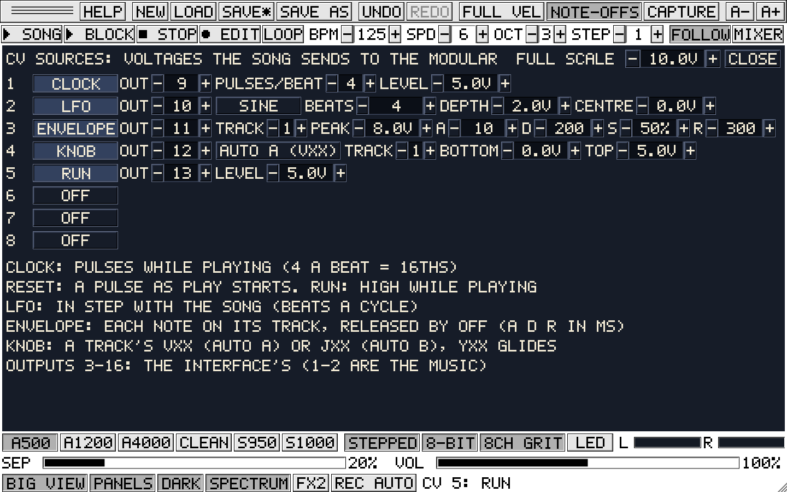
| SOURCE | WHAT IT SENDS |
|---|---|
| CLOCK | Pulses while playing: PULSES/BEAT 4 = 16ths, 24 = 24 ppqn |
| RESET RUN | A pulse as play starts; high while playing |
| LFO | Sine, triangle, saw, square or random, BEATS a cycle in step with the song, with DEPTH and CENTRE |
| ENVELOPE | Attack, decay, sustain, release (ms), started by each note on its TRACK and released by OFF, up to PEAK |
| KNOB | A track's Vxx (AUTO A) or Jxx (AUTO B) as a voltage between BOTTOM and TOP (Yxx glides it): automation for the modular |
CV DELAY (top of CV SOURCES, −100 to +100 ms) lines the modular up with the music: positive sends the voltages later; negative sends the music on 1–2 later, for a modular heard back through the inputs.
Safety. Voltages are clamped to the interface's range. STOP closes every gate and drops RUN; STOP twice (panic) also lets go of a tuner or AUTO-TUNE voltage.
CHORDS
A plug-in or MIDI-out instrument plays a whole chord from one note. Put #xy on the note's line and it plays chord slot xy from the song's chord table, held. The note you type is the chord's root: C-3 with #01 (slot 01, MIN) plays C, D#, G.
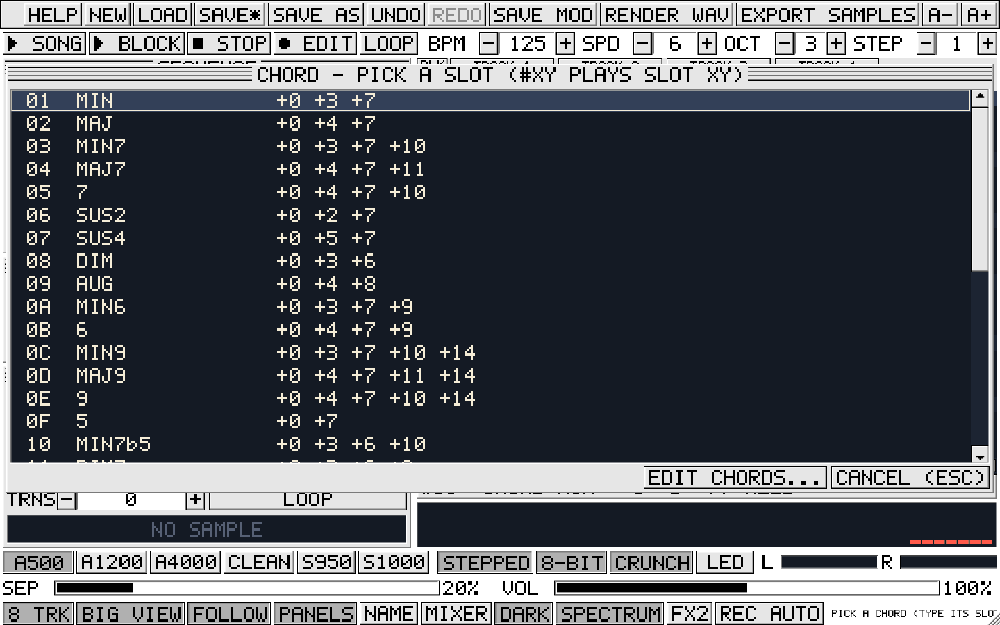
# cell: the chord list- Three ways in: type Shift3 (
#) in the command column, then the slot number; or right-click an effect cell and click # CHORD at the top of the list, then pick the chord; or right-click a cell that already has a#to change its chord. - In the chord list, click a chord, or use the arrows and Enter; typing a slot number jumps to it. EDIT CHORDS... opens the CHORDS page on that slot, EFFECT COMMANDS... the usual list. Cancelling leaves
#01. - A slot holds up to 8 notes, below the root as well as above it. An inversion doesn't put the root at the bottom:
C-3with MAJ INV 1 plays E, G and the C above. - The chord ends like a note: the next note on the track, note-off,
ECxorNxx. Pitch commands bend the whole chord. On a sample instrument#xyplays just the note, and saving a MOD leaves it out.
Playing chords in
With EDIT on, or for CAPTURE, just play the chord on a MIDI keyboard or the laptop keys. On a plug-in or MIDI-out instrument, notes pressed together (within 60 ms) that match a slot in the song's chord table go in as one note, the root, with #xy on one track. The status line says what it found, for example CHORD MIN7 (#03) ON A-2.
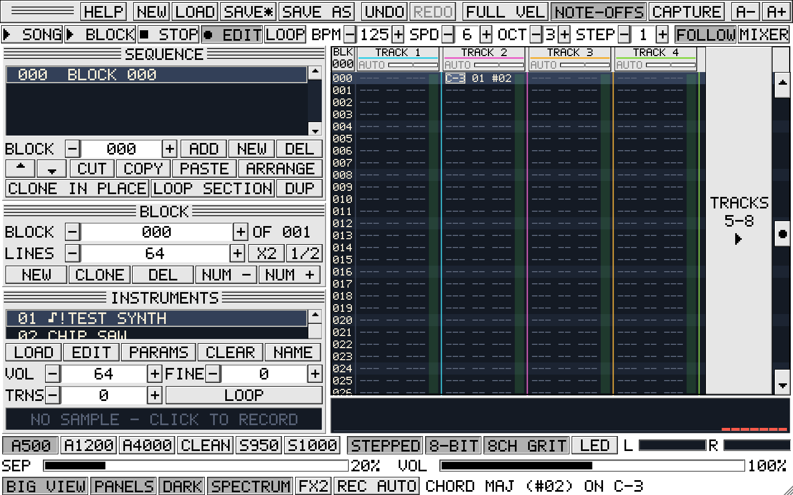
#02 (MAJ)- Inversions and spread voicings match their own slots (MAJ INV 1, MIN7 DROP 2…). If no slot has exactly the notes you played, a slot with the same note names in another octave is used, and the status line says the voicing may differ.
- When two slots have the same notes (C6 and Am7), the one whose root is your lowest note wins, then the one starting on the first key you pressed, then the lower slot.
- The notes go in as you play them; the moment they make a chord they're rewritten as one, still one undo step. In step entry the cursor moves on once for the chord. Its
OFFgoes on the line where you let go of the last key. #goes in the first effect column, or the second if the first already has a command. If both are taken, the notes go in one by one and the status line says so.- Notes rolled slower than 60 ms stay separate notes, and sample instruments always get the notes as played. Right-click EDIT → DETECT CHORDS turns it off; it's remembered.
The CHORDS page
Press Cmd3, or CHORDS... on the instrument's page. The slots 01–FF are on the left, the chord database on the right.
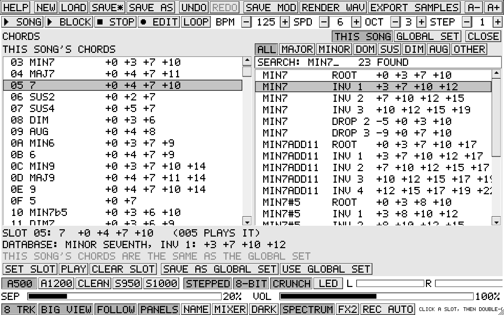
| CONTROL | WHAT IT DOES |
|---|---|
| Slot list | Fixed columns: #, NAME (a long one ends in ..) and NOTE, so the notes line up. Click a slot to fill it; drag, Shift-click or Cmd-click to pick several. Shift ↑↓ moves through the slots. A * marks a slot that isn't the same in the global set; a coloured stripe, its group colour. |
| Double-click NOTE | Type the slot's note right there (Enter keeps it, Esc doesn't) |
| RECORD CHORD | Stays on: play chord after chord into the slots (see below) |
| COLOUR | A group colour for the picked slots: 8 colours or none |
| AUDITION | Clicking a chord plays it, on the last key you played |
| Database | Double-click a chord (or press Enter, or SET SLOT) to put it in the slot. ↑↓ move through it. |
| ALL MAJOR MINOR DOM SUS DIM AUG OTHER | Show one family of chords |
| Typing | Searches: MIN7, SUS4, DROP 2, 7B9 for 7♭9. Backspace and Esc clear it. |
| PLAY | Plays the chord with the current instrument, on the last key you played (Space) |
| CLEAR SLOT | Empties the slot, or all the picked ones (Delete): their #xy then plays just the note |
| THIS SONG GLOBAL SET | Which table you're editing |
| SAVE AS GLOBAL SET | The song's chords become the global set (it asks first) |
| USE GLOBAL SET | The song gets the global set (undo takes it back) |
Recording your own chords
Click the slot to start at and press RECORD CHORD above the slot list: it stays down. Play chord after chord on a MIDI keyboard or the laptop keys, letting go between them. Each chord goes into the selected slot, then the selection moves on to the next empty slot, so nothing is written over; the status line counts them. Click RECORD CHORD again (or Esc) to stop.
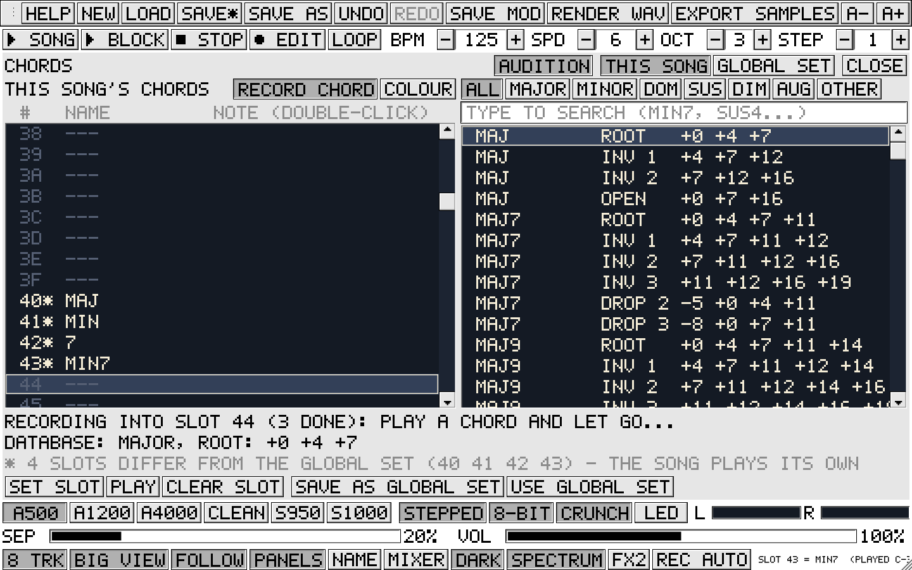
- If the notes are one of the database's chords, the slot takes that name and root: E G C becomes MAJ INV 1, so
C-3with it plays your E G C. Anything else is called USER and is measured from your lowest note. - Up to 8 notes (with more, the lowest 8). One note on its own isn't a chord and is ignored.
- While it records, the MIDI keyboard doesn't write into the pattern and the laptop keys don't type into the search. Each chord is an undo step.
Notes on slots
Double-click a slot's NOTE column (or right-click → NOTE...) and type a note of your own right there, such as VERSE PROG 1, up to 24 characters; Enter keeps it, Esc doesn't. It shows in the slot list's NOTE column, in the chord list over the pattern and in the help line for a #xy, and it stays with the slot when you change its chord. Notes are saved in the song and in the global set.
Colour groups
Pick several slots (drag down the list, Shift-click a range, Cmd-click one at a time), then COLOUR (or right-click → COLOUR...): red, orange, yellow, green, cyan, blue, purple, pink, or none. The colour shows as a stripe left of the slot number, in the chord list over the pattern, and on the #xy in the pattern itself, so a progression stands out while you write.
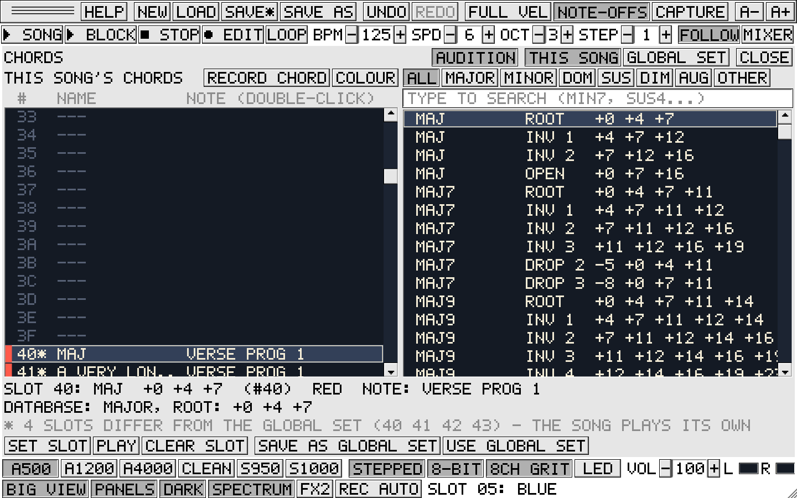
#40 red, #05 blueCOPY, PASTE and CLEAR work on all the picked slots. Colours are saved in the song and in the global set.
Hearing chords (AUDITION)
With AUDITION on (top right of the CHORDS page; on to start with), clicking a slot or a chord in the database plays it with the current instrument while you hold the mouse, on the last key you played (C of the octave before you've played any). The arrow keys play each chord briefly as you move. In the chord list over the pattern, moving with the arrow keys or the mouse plays each chord on that cell's note with that track's instrument; clicking still picks it.
The database
116 chord types — major, minor, dominant, suspended, diminished, augmented and more — from the tonal music library's list, which comes from Wikibooks' complete list of chord patterns. Each one is there as written (ROOT), in every inversion (INV 1, INV 2…), as DROP 2 and DROP 3 voicings for four-note chords and OPEN for triads: 638 voicings in all.
The song's chords and the global set
- Every song has its own table, saved in the song. The global set is kept on your Mac: every new song, and every MOD or older song without a table, starts with a copy of it.
- Changing a song's chords doesn't change the global set, and changing the global set doesn't change any song. A saved song always plays its own chords, whatever the global set has become.
- When you load a song, the status line says how its chords compare with the global set, for example
SLOTS 05 1F DIFFER FROM THE GLOBAL SET. It plays its own either way. - Older songs are converted when they load: v0.12–v0.14 chords (
0xyon a CHORD instrument) become#xy, and v0.11 chords (0xyas two intervals) each get a slot with the same notes. The song sounds the same.
BOUNCING
Turn any part of the pattern into a new sample. Highlight some notes (they can cover several tracks), then right-click inside the highlight, or press CmdB.
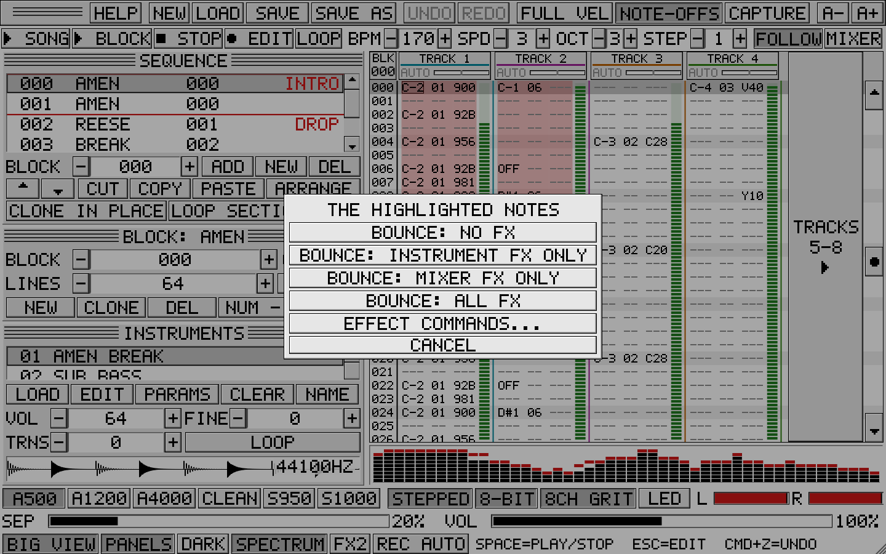
| CHOICE | WHAT'S IN THE SAMPLE |
|---|---|
| NO FX | The instruments' sound before any effects. Use it when the sample will play through the same effects. |
| INSTRUMENT FX ONLY | Through the instruments' own inserts, not the mixer. |
| MIXER FX ONLY | After the tracks' strips (EQ, inserts, fader) plus what they send to SEND A / B, so reverb and delay tails are in it; not the instruments' own effects. |
| ALL FX | Both. Never the master or the Paula / Akai output stage. The new instrument is called BOUNCE, BOUNCE+IFX, BOUNCE+MFX or BOUNCE+FX. |
- Only the highlighted lines of the highlighted tracks play, from the first line, at the tempo and speed set there. Plug-in instruments are included.
- It records on after the last line until the sound has died away (up to 10 seconds), so tails aren't cut.
- The sample goes into the first empty instrument slot, named like
BOUNCE T1-2 000-015, at 44.1 kHz.C-3plays it exactly as recorded. - Nothing else changes: your pattern and the instruments that played it stay as they are. Undo removes the new instrument.
RENDERING
RENDER WAV (File menu) asks what to render:
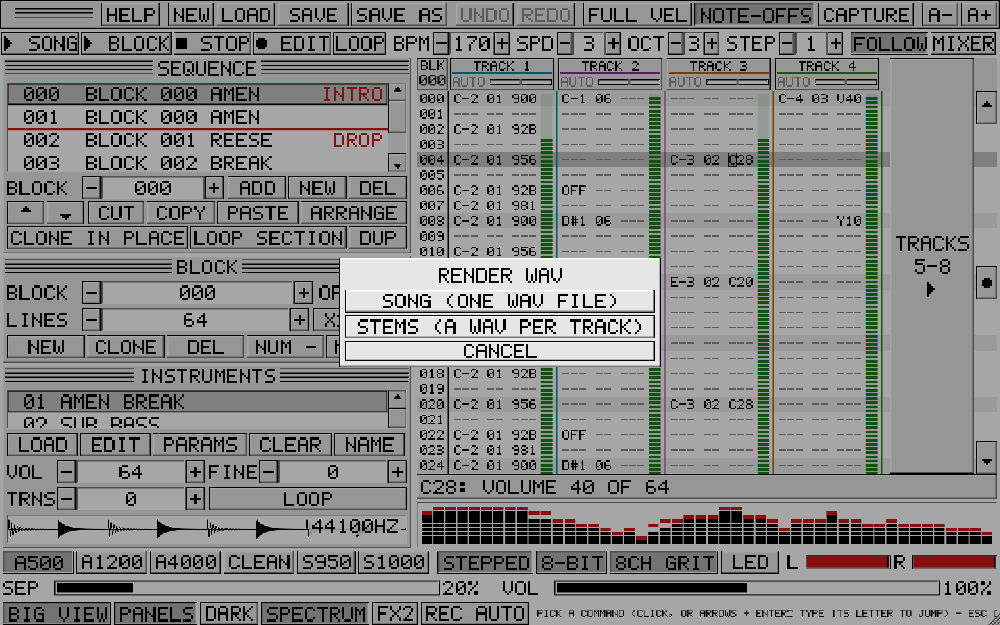
- SONG: the song once through as a 24-bit stereo WAV, mixer and all.
- STEMS: a folder next to the name you pick,
<name> STEMS, with one 24-bit WAV per used track (after its strip), SEND A, SEND B and the master:01 TRACK 1.wav…11 MASTER.wav. They start together and are the same length, so they drop straight into Ableton. - After the song ends it keeps going until everything is quiet for a second (up to 20 seconds), so tails aren't cut. Plug-in delay is taken off the start.
- MIDI-out instruments can't be rendered; the status line says which were left out.
These are in the File menu. EXPORT SAMPLES writes every instrument's sample to a folder as 01 NAME.wav, 02 NAME.wav… SAVE MOD writes a ProTracker MOD (M.K. when only tracks 1–4 are used, else 8CHN) and says what a MOD can't hold.
SAVING & FILES
- SAVE (CmdS) writes straight to the song's file; the first time it asks for a name. SAVE AS (CmdShiftS) always asks, for versions. The song takes the file's name. SAVE* with a star means unsaved changes.
- A
.prvsong holds everything: every sample (stereo too), the mixer, plug-in settings, automation, MIDI-out settings, its chord table. You can move or delete the original WAVs. - LOAD also opens ProTracker-style
.modfiles (4, 6 and 8 channels) and MED / OctaMEDMMD0/MMD1modules. - Songs saved by older versions always load.
- Autosave: every two minutes, when something changed, a copy of the song goes into the app's own folder (in the background). If the app doesn't close properly — a crash, a plug-in taking it down — next time it offers RECOVER (the song as it was, still pointing at its own file, marked unsaved) or START AS NORMAL. A normal quit never asks.
- The window's title shows the song,
*for unsaved changes, and the block you're editing.
KEYS
| KEY | ACTION |
|---|---|
| Z S X D C… | Notes, lower octave (, L . ; / carry on up) |
| Q 2 W 3 E… | Notes, upper octave |
| 1 | Note off |
| Space | Play and record (EDIT on) / stop (EDIT off) · with Shift, the song. On every page |
| Esc or \ | Edit mode on / off |
| Shift3 | In a command column: #, the chord command |
| Return | Play / stop, EDIT left as it is · Shift song · Cmd block from the cursor |
| Arrows | Move · Shift ↑↓ 4 lines · Shift ←→ track |
| Tab | Next track · with Shift, previous |
| [ ] | Octave down / up, on every page (also with a plug-in's window in front) |
| - = | Previous / next instrument |
| Delete | Clear the highlight or the field · Shift removes the line · Alt inserts one |
| Cmd C X V | Copy / cut / paste the highlight, or the track (Shift: the block) |
| CmdA | Highlight the whole block |
| CmdB | Bounce the highlight to a new instrument |
| Cmd↑ ↓ | Transpose the track a semitone (Shift: an octave) |
| CmdZ | Undo · with Shift, redo |
| Cmd[ ] | Loop start / end at the cursor |
| CmdS | Save · with Shift, save as |
| Cmd2 / 1 | Mixer / pattern |
| Cmd3 | CHORDS: the chord table |
| Cmd4 | SAMPLE: record audio into the instrument |
| CmdF | FOLLOW on / off |
| CmdR | CAPTURE: write what you just played into the pattern |
| CmdO | Load a song |
| Alt↑↓ | Move the selected song positions |